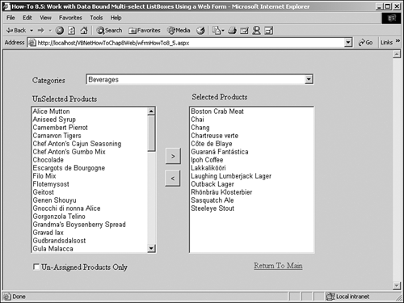

Note
If you check the Unassigned Products Only check box when you are first getting into Northwind and running this example, you probably won't see unassigned items. You will need to unselect products from a category. |
As with How-to 8.1, this example will show you how to take advantage of multi-select list boxes, only with a Web Form instead of a Windows Form.
You need to be able to manipulate multi-select list boxes in your Web applications using ASP.NET as well as in your Visual Basic .NET desktop applications. This How-To shows you how to use just about the same coding techniques as in How-To 8.1, but with the change of using the Web Form.
When you are performing a task in a Web Form that you have created in a Windows Form, you would think it would take the same effort-if not more-to accomplish the task. However, this is not the case for this How-To. The commands available to the Windows Form ListBox control will give better performance because you have a SelectedIndexes collection to work with, and in the Web Form you iterate through all the items in the ListBox control and check the Selected property. Nonetheless, coding on the Web Form is simpler.
Unlike the Windows Form version of the ListBox Control, which has four different settings for the SelectionMode property, the Web Form version has two: Single or Multiple.
Another thing to keep in mind when developing with data and the Web Form is that you will need to use the DataBind method off the ListBox control to bind the data at runtime. In the Load event of the page, you will want to use the IsPostBack method of the page to ensure that you perform certain tasks only when the page is initially loaded, and not on a round trip that pages take back to the server.
Open and run the VB.NET -Chapter 8 solution. From the main Web Form, click on the hyperlink with the caption How-To 8.5: Work with Data-Bound Multi-Select List Boxes Using a Web Form. You will then see the page displayed in Figure 8.8.

When the page loads, you will see the Beverages category chosen in the top combo box. The Selected and Unselected Products ListBox controls are filled in with the appropriate products.
If you click on a product in the Unselected Products list box and then click on the arrow button pointing to the right (>), the item is moved to the Selected Products list box. If you select items in the Selected Products list box and click on the arrow button pointing to the left (<), those items are moved to the Unselected Products list box.
If you click on the Unassigned Products Only check box at the bottom of the form, the Unselected Products list box is filled with products that are not assigned to any category.
Note
If you check the Unassigned Products Only check box when you are first getting into Northwind and running this example, you probably won't see unassigned items. You will need to unselect products from a category. |
Create a Web Form. Then place the controls shown in Figure 8.8 with the properties set as seen in Table 8.7.
|
Object |
Property |
Setting |
|---|---|---|
|
DOCUMENT |
bgColor |
buttonface |
|
Label |
Name |
Label1 |
|
Text |
Category: |
|
|
DropDown |
Name |
ddCategories |
|
Label |
Name |
Label2 |
|
Text |
Unselected Products |
|
|
ListBox |
Name |
lstUnSelected |
|
SelectionMode |
Multiple |
|
|
Label |
Name |
Label3 |
|
Text |
Selected Products |
|
|
ListBox |
Name |
lstSelected |
|
SelectionMode |
Multiple |
|
|
Command Button |
Name |
btnSelect |
|
Text |
> |
|
|
Command Button |
Name |
btnUnSelect |
|
Text |
< |
|
|
CheckBox |
Name |
chkUnAssignedOnly |
|
Label |
Name |
Label4 |
|
Text |
UnAssigned Products Only |
|
|
HyperLink |
Name |
hplReturnToMain |
|
Text |
Return To Main |
|
|
NavigateURL wfrmMain.aspx |
||
Note
HyperLink is optional. It is just used to get back to the main sample page for this chapter. |
As with some of the other chapters' projects, before creating the code that will be attached to the Load event of the form, you need to build a support routine to create the Connection string. Called BuildCnnStr, the function can be seen in Listing 8.24. This function takes a server and database names that are passed to it and creates a Connection string.
Function BuildCnnStr(ByVal strServer As String, _
ByVal strDatabase As String) As String
Dim strTemp As String
strTemp = "Provider=SQLOleDB; Data Source=" & strServer & ";"
strTemp &= "Initial Catalog=" & strDatabase & ";"
strTemp &= "Integrated Security=SSPI"
Return strTemp
End Function
Although you could create a routine that would pass back a Connection object, a more versatile method would be to pass back a string. Some objects ask you for a Connection object, but others just want a string. You will see BuildCnnStr called in the next step.
On the form, add the code in Listing 8.25 to the Load event. In this code, the first task is to make sure the code is run only once in the page, when it is first loading. The Not IsPostBack check performs this task. Next, you will create a data adapter called odaCategories and load the categories SQL Statement into it. The dtCategories data table is filled and set as the DataSource property of ddCategories. The DataTextField and DataValueField of ddCategories are then set. After that, the DataBind method of the DropDown is called. This is necessary for binding data to the server controls on Web Forms. Finally, two new subroutines called LoadUnSelectedProducts and LoadSelectedProducts are called to populate the appropriate list boxes. These routines are discussed in the next two steps.
Private Sub Page_Load(ByVal sender As System.Object,
ByVal e As System.EventArgs) Handles MyBase.Load
'Put user code to initialize the page here
Dim odaCategories As OleDb.OleDbDataAdapter
Dim dtCategories As New DataTable()
'-- Make sure this code is only executed when the page is first loaded.
If Not Page.IsPostBack Then
'-- Load up the Categories DropDown control
odaCategories = New _
OleDb.OleDbDataAdapter("Select CategoryID, CategoryName " & _
" From Categories",
BuildCnnStr("(local)", "Northwind"))
odaCategories.Fill(dtCategories)
Me.ddCategories.DataSource = dtCategories
Me.ddCategories.DataTextField = "CategoryName"
Me.ddCategories.DataValueField = "CategoryID"
'-- This is necessary for Web Forms, but not used on Windows Forms.
Me.ddCategories.DataBind()
LoadUnSelectedProducts()
LoadSelectedProducts()
End If
End Sub
Create the LoadUnSelectedProducts routine, shown in Listing 8.26, by entering the following code in the Web Form that you created for this How-To. This routine starts off by testing the check box called chkUnAssignedOnly. Based on that value, a SQL string is created that grabs the products that are either not assigned to any product, if chkUnAssignedOnly = True, or all products that are not assigned to the chosen category are retrieved. The SQL String is stored in the variable called strSQL. Next, the DataAdapter object called odaUnselected is set to strSQL and the SQL Server connection string. The DataTable object called dtUnSelected is then filled.
The Dispose method of the ListBox control is called to remove current items, and dtUnSelected is assigned to the DataSource property of lstUnSelected. Then the DataTextField and DataValueField properties are set. Last, the DataBind and ClearSelected methods are called to bind the lstUnSelected and ensure that no entries are left selected.
Sub LoadUnSelectedProducts()
Dim odaUnSelected As OleDb.OleDbDataAdapter
Dim dtUnSelected As New DataTable()
Dim strSQL As String
'-- If the check box for unassigned only is checked, then
' grab the product items where the category is null; otherwise, load
' it up with those products not assigned to the current category.
If chkUnAssignedOnly.Checked Then
strSQL = "Select ProductID, ProductName From Products " &
"Where CategoryID IS NULL Order By ProductName"
Else
strSQL = "Select ProductID, ProductName From Products " & _
Where CategoryID <> " & ddCategories.SelectedItem.Value & _
" Or CategoryID IS NULL Order By ProductName"
End If
'-- Load up the lstUnselected based off the SQL string.
odaUnSelected = New OleDb.OleDbDataAdapter(strSQL,
BuildCnnStr("(local)", "Northwind"))
odaUnSelected.Fill(dtUnSelected)
Me.lstUnSelected.Dispose()
Me.lstUnSelected.DataSource = dtUnSelected
Me.lstUnSelected.DataTextField = "ProductName"
Me.lstUnSelected.DataValueField = "ProductID"
'-- Needed on Web Forms.
Me.lstUnSelected.DataBind()
Me.lstUnSelected.ClearSelection()
End Sub
Create the LoadSelectedProducts routine by entering the code in Listing 8.27 into the form you created for this How-To. This routine basically performs the same tasks that the routine listed in the previous step does, except that it performs the tasks using the lstSelected ListBox control. This routine also doesn't need to test the CheckBox control.
Sub LoadSelectedProducts()
Dim odaSelected As OleDb.OleDbDataAdapter
Dim dtSelected As New DataTable()
Dim strSQL As String
'-- Create the SQL string for the category chosen in the
' ddCategories dropdown. Then load the data table with the data
' and bind the lstSelected list box.
strSQL = "Select ProductID, ProductName From Products " & _
"Where CategoryID = " & _
ddCategories.SelectedItem.Value & " Order By ProductName"
odaSelected = New _
OleDb.OleDbDataAdapter(strSQL, _
BuildCnnStr("(local)", "Northwind"))
odaSelected.Fill(dtSelected)
Me.lstSelected.Dispose()
Me.lstSelected.DataSource = dtSelected
Me.lstSelected.DataTextField = "ProductName"
Me.lstSelected.DataValueField = "ProductID"
Me.lstSelected.DataBind()
Me.lstSelected.ClearSelection()
End Sub
Add the code in Listing 8.28 to the SelectedIndexChanged event of the ddCategories drop-down.
Private Sub ddCategories_SelectedIndexChanged(ByVal sender As System.Object,
ByVal e As System.EventArgs) _
Handles ddCategories.SelectedIndexChanged
LoadUnSelectedProducts()
LoadSelectedProducts()
End Sub
Add the code in Listing 8.29 to the CheckChanged event of the chkUnAssignedOnly check box.
Private Sub chkUnAssignedOnly_CheckedChanged(ByVal sender As System.Object,
ByVal e As System.EventArgs) Handles chkUnAssignedOnly.CheckedChanged
LoadUnSelectedProducts()
End Sub
Add the code in Listing 8.30 to the Click event of the btnSelect command button. This and the next step contain the most code as well as some new objects and properties. First, the number of highlighted items (SelectedIndices.Count) is stored to an Integer variable called intItemsNum. A 1 is subtracted off the figure because the collections in .NET are zero based.
Next, the code iterates through the Items collection of the lstUnSelected list box, testing the Selected property for selected items. The Value property of the item is converted to a string and added to a string variable called strItems. strItems is then used to create the criteria for an IN clause of a SQL Update statement, which is passed to the Command object called ocmdSelect. This Command object is executed, and the selected products are updated to reflect the category chosen. Last, both the list boxes are reloaded to reflect the changes.
Private Sub btnSelect_Click(ByVal sender As System.Object,
ByVal e As System.EventArgs) Handles btnSelect.Click
Dim intItemsNum As Integer
Dim strItems As String
Dim oCurr As Object
'-- Iterate through each of the items in lstUnSelected
' and check the Selected property.
' If selected, store into a string with other selected product IDs.
For Each oCurr In Me.lstUnSelected.Items
If oCurr.Selected() = True Then
If Len(strItems) > 0 Then
strItems = strItems & ", "
End If
strItems = strItems & CType(oCurr.Value, String)
End If
Next
'-- Run an update query to assign the category to the desired products,
' using an IN clause in the SQL statement.
Try
Dim ocnn As New OleDb.OleDbConnection(BuildCnnStr("(local)", _
"Northwind"))
Dim ocmdSelect As New _
OleDb.OleDbCommand("Update Products Set CategoryID = " &
Me.ddCategories.SelectedItem.Value & _
" Where ProductID IN (" & strItems & ")", ocnn)
ocmdSelect.CommandType = CommandType.Text
ocnn.Open()
ocmdSelect.ExecuteNonQuery()
Catch excpCommand As Exception
End Try
LoadUnSelectedProducts()
LoadSelectedProducts()
End Sub
Add the code in Listing 8.31 to the Click event of the btnUnSelect command button. Again, this code is similar to the previous step, but it is used to set the CategoryID column to null if the product was highlighted in the lstSelected list box and btnUnSelect was clicked.
Private Sub btnUnSelect_Click(ByVal sender As System.Object,
ByVal e As System.EventArgs) Handles btnUnSelect.Click
Dim intItemsNum As Integer
Dim strItems As String
Dim oCurr As Object
'-- Iterate through each of the items in lstSelected
' and check the Selected property.
' If selected, store into a string with other selected product IDs.
For Each oCurr In Me.lstSelected.Items
If oCurr.Selected() = True Then
If Len(strItems) > 0 Then
strItems = strItems & ", "
End If
strItems = strItems & CType(oCurr.Value, String)
End If
Next
Try
Dim ocnn As New OleDb.OleDbConnection(BuildCnnStr("(local)", _
"Northwind"))
Dim ocmdUnSelect As New _
OleDb.OleDbCommand("Update Products Set CategoryID = Null " & _\\
"Where ProductID IN (" & _
strItems & ")", ocnn)
ocmdUnSelect.CommandType = CommandType.Text
ocnn.Open()
ocmdUnSelect.ExecuteNonQuery()
Catch excpCommand As Exception
End Try
LoadUnSelectedProducts()
LoadSelectedProducts()
End Sub
When the user chooses a category, the appropriate items are loaded into the two list boxes. Unselected items are in the list box on the left, and the selected items are in the list box on the right.
If the check box is selected, then those only those items that are not currently assigned to categories are displayed in the list box on the left, which is titled Unselected Products.
When the btnSelect button is clicked, any items that are highlighted in the lstUnSelected list box are used in a query that updates the server with the new category they now belong to. Similarly, when the btnUnSelect is clicked, items that are listed in the lstSelected list box are used in a query that updates the CategoryID of the products to null.
As mentioned in How-To 8.1, this example is not the smartest to create in real life because you want products to be assigned to a category. However, this example does a good job of showing the properties and methods you can use to work with the multi-select features of the ListBox control.